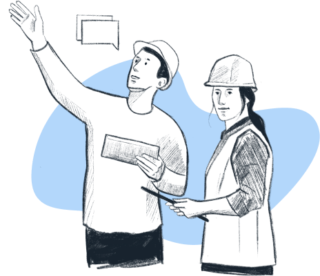

Мы заботимся о доставке на стройплощадку и о людях, которые на них рассчитывают
Мы знаем всё о гордости от сияющего нового здания. Нам также известно всё о разочаровании от попыток завершить проект в срок и в рамках бюджета.
Мы здесь, чтобы помочь.
